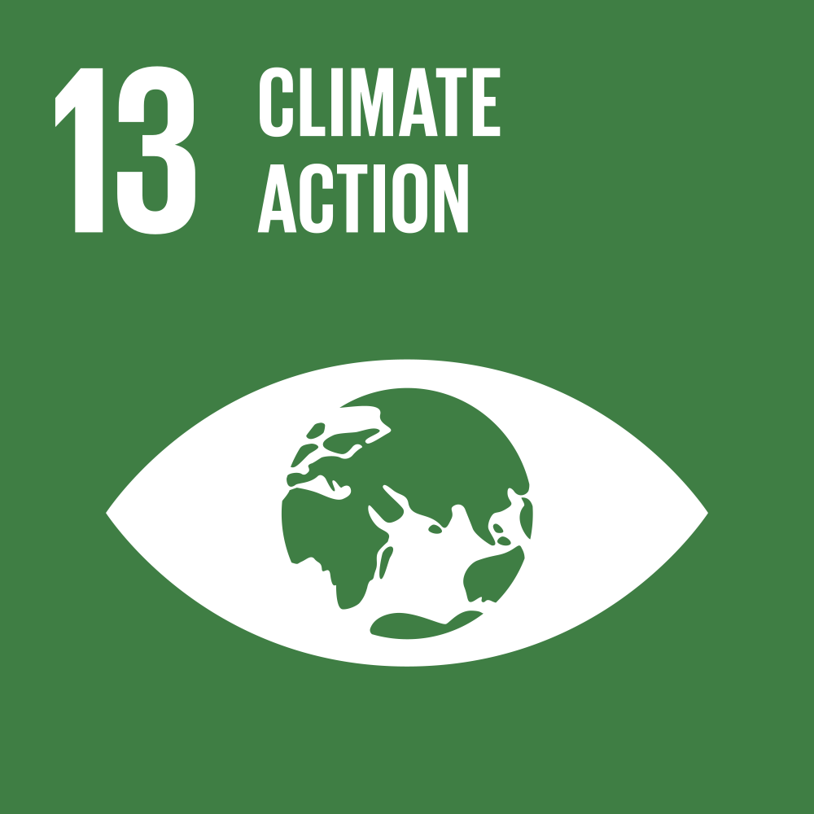
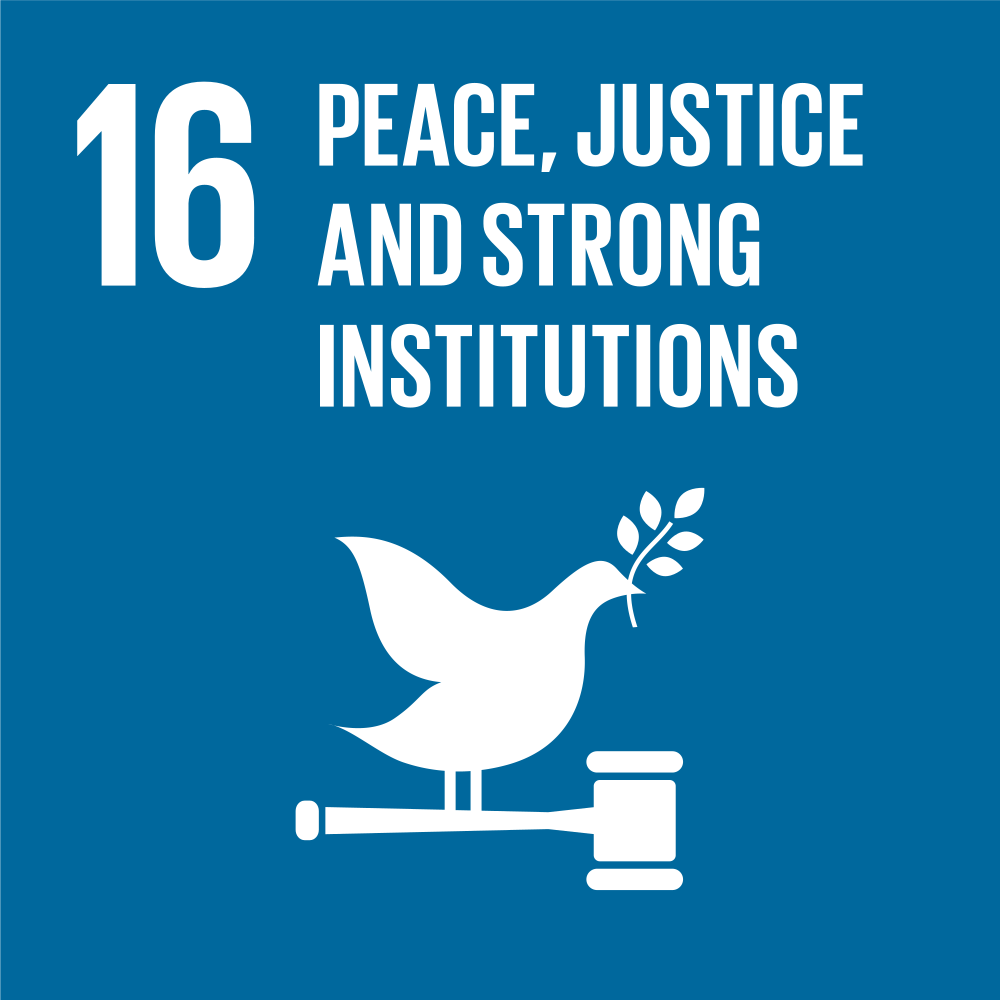
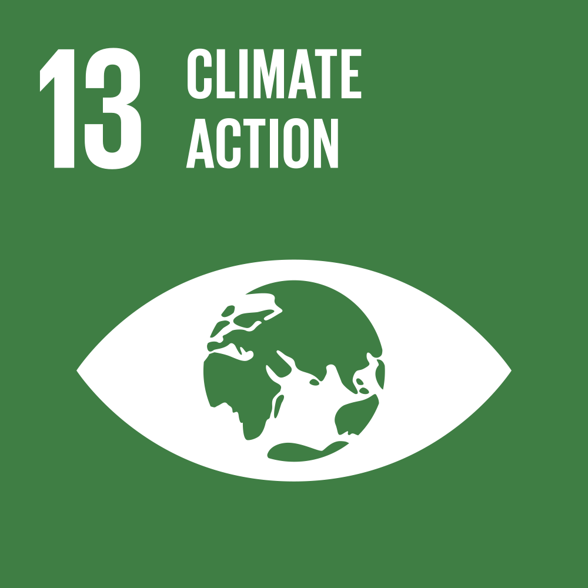
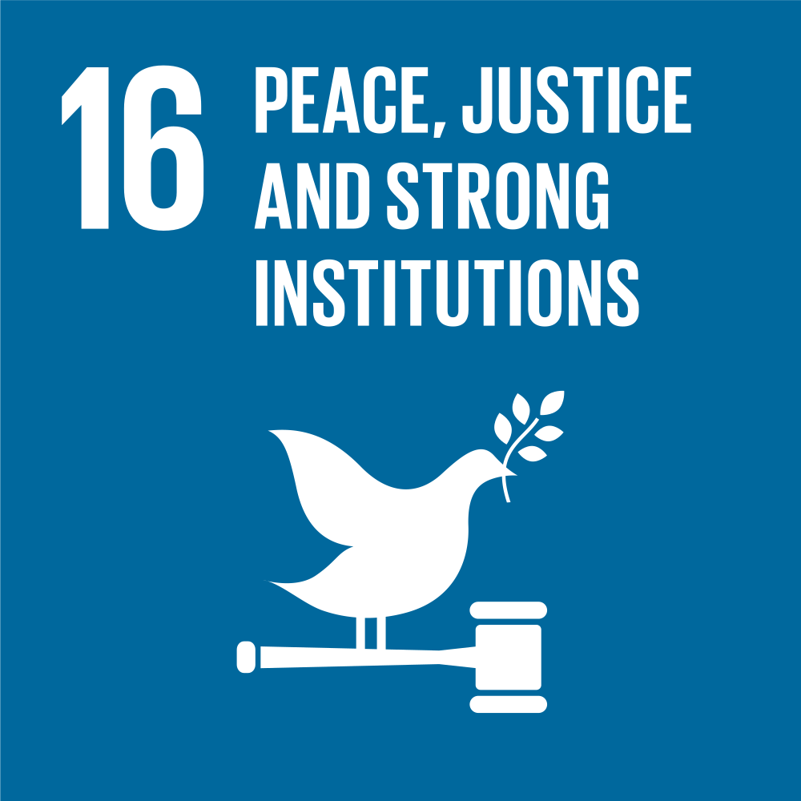
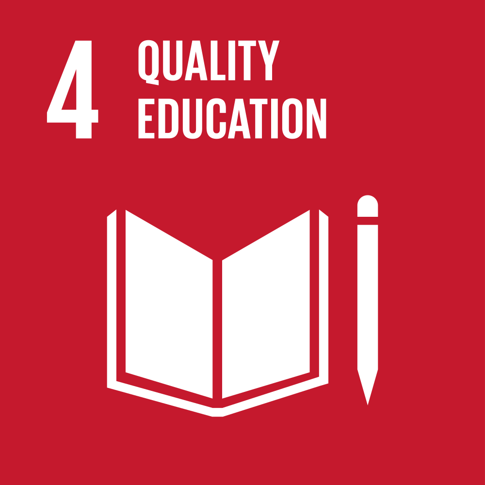
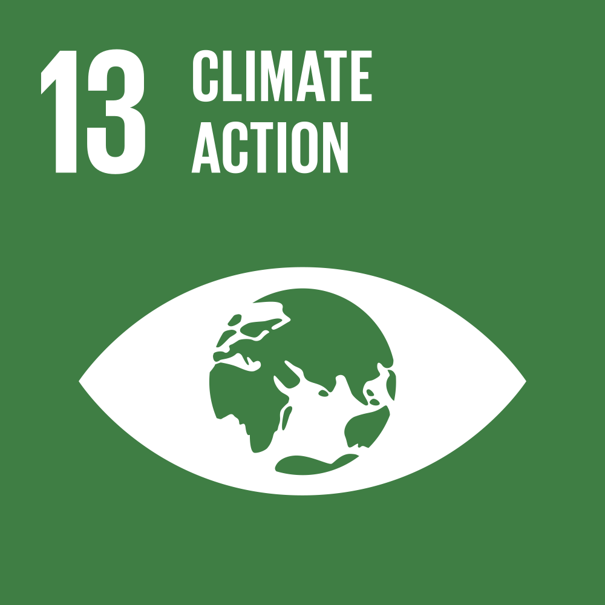
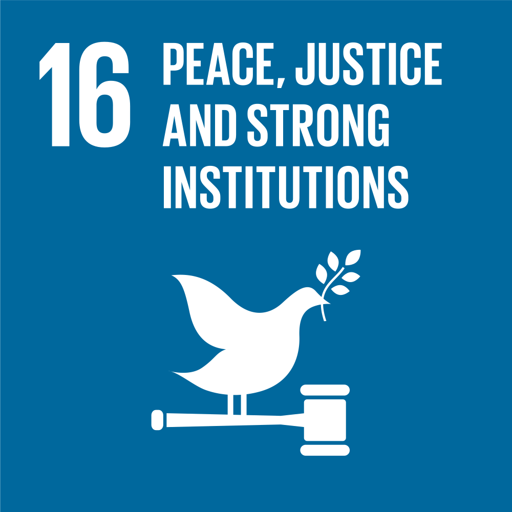

Aníbal M. Astobiza graduated in Philosophy from the University of Deusto, Master in Social Psychology, D.E.A. (Diploma in Advanced Studies) from the University of the Basque Country/Euskal Herriko Unibertsitatea and Doctor in Cognitive Sciences and Humanities from the University of the Basque Country/Euskal Herriko Unibertsitatea.
He researches at the intersection of the cognitive, biological and social sciences and has published on these and other topics. He has carried out postdoctoral research stays at the IFS-CSIC, the Oxford Uehiro Centre for Practical Ethics at Oxford University and the Center for Bioethics at Harvard University. He was a member of the Graduate Common Room (GCR) of Christ Church College, Oxford University (2019).
For a selected list of publications, please visit ORCID.
His areas of specialization are the philosophy of cognitive science, specifically social cognition, history of psychology, psychiatry and neuroscience, data ethics, AI ethics, philosophy of complexity sciences and experimental philosophy and psychology of AI. His areas of interest include Bioethics/Neuroethics (enhancement technologies).
You can follow him on his twitter account: @anibalmastobiza
Contact him at: anibalmastobiza@gmail.com
In 2015, UN member states agreed to 17 global


